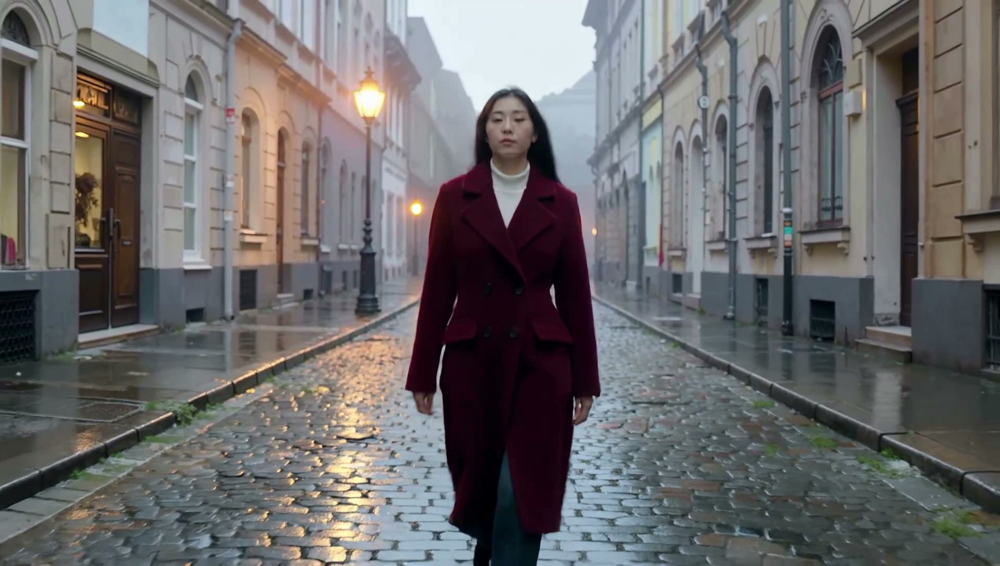

She walks toward camera. 58s gen
Two engines, one continuous shot. Shot 1 is generated on Seedance 1 Pro from an engineered prompt. Its last frame is handed to Kling v2.5 Turbo Pro as the start image of shot 2 — so the woman, her red coat, and the street carry over by literal pixels, not luck. Then both are stitched.

What to judge: at the 5s seam, does the woman stay the same person — same face, same coat, same street? That continuity is what frame chaining buys, and it's the hard part of multi-shot AI film.